Tão saudável e apetitosa que até você vai querer comer!
Seu melhor amigo merece uma comida natural...
Saudável
Nossa comida é preparada com carnes selecionadas, grãos, legumes e verduras sazonais, embalada e congelada para manter o frescor direto da nossa cozinha para o pote do seu cão!
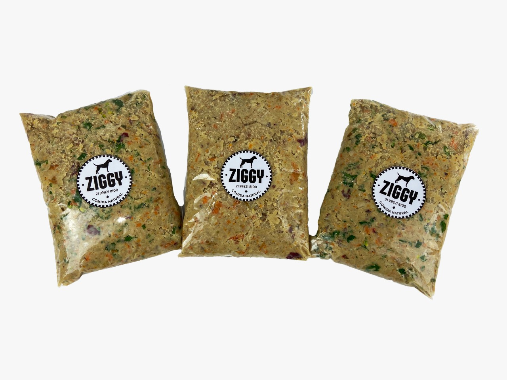
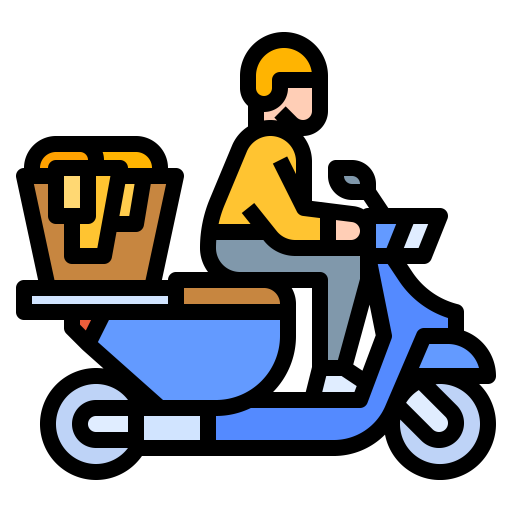 Prática
Embalada em termoplásticos que podem ir ao banho maria ou ao microondas, nossa comida dura 3 meses no freezer ou 7 dias na geladeira.Tudo muito prático e saboroso, entregue na sua casa!
Personalizada
Abóbora, Batata Doce, Cenoura, Inhame, Couve, Espinafre, Frango, Sardinhas, suplementos essenciais e muito mais compõe as receitas de Ziggy - Comida Natural, garantindo a saúde do seu melhor amigo.
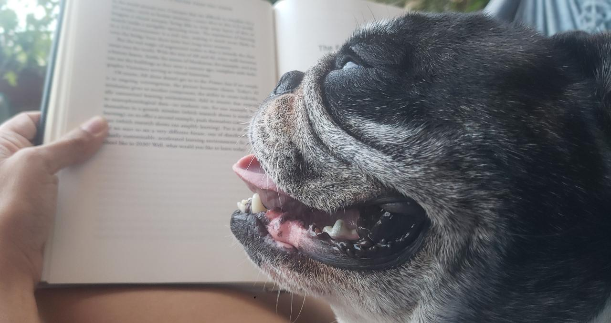
Nossa comida é preparada com carnes selecionadas, grãos, legumes e verduras sazonais, embalada e congelada para manter o frescor direto da nossa cozinha para o pote do seu cão!
Embalada em termoplásticos que podem ir ao banho maria ou ao microondas, nossa comida dura 3 meses no freezer ou 7 dias na geladeira.Tudo muito prático e saboroso, entregue na sua casa!
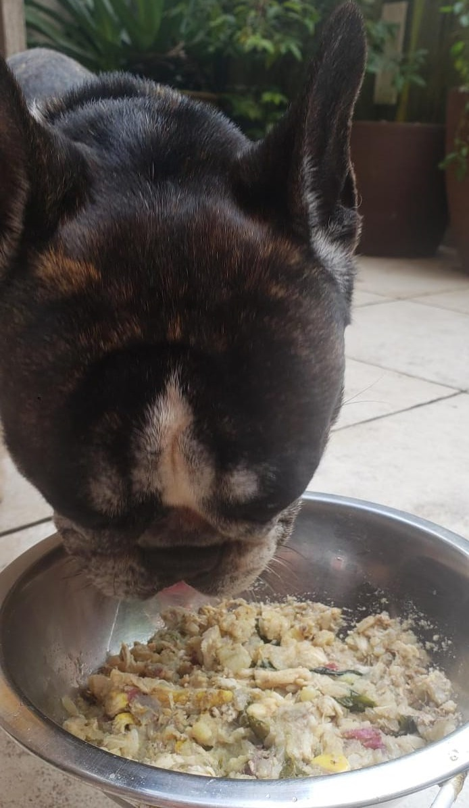
Abóbora, Batata Doce, Cenoura, Inhame, Couve, Espinafre, Frango, Sardinhas, suplementos essenciais e muito mais compõe as receitas de Ziggy - Comida Natural, garantindo a saúde do seu melhor amigo.
Como tudo começou
A Ziggy Comida Natural nasceu da necessidade de encontrar uma comida mais saudável e palatável pro nosso Labrador, Ziggy. Quando tinha 4 anos, Ziggy começou a apresentar pelos oleosos, olhos lacrimejantes e otites recorrentes. Além disso, ele não parecia ter apetite e demonstrava muita tristeza na hora de comer.
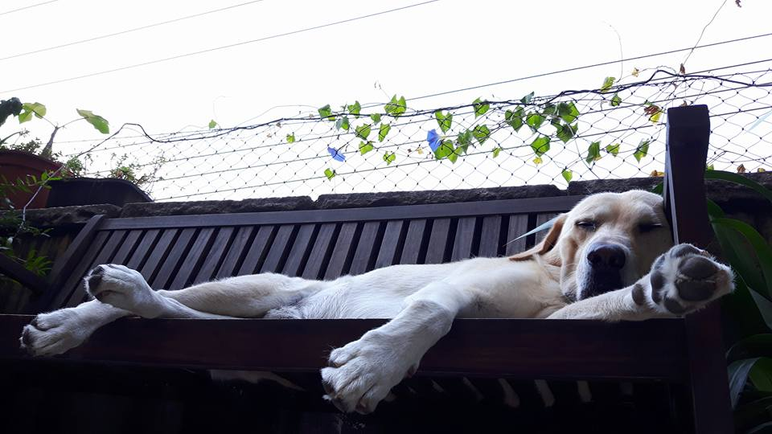
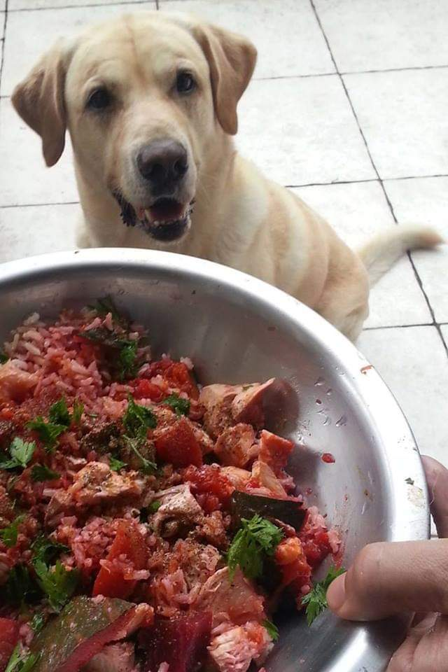
Cansados de ver nosso filhote sofrendo, pesquisamos muito sobre nutrição canina e encontramos o caminho pra devolver a saúde e a alegria para nosso cãozinho na alimentação natural!
Começamos na cozinha de casa, cozinhando só pra ele, e em pouco tempo percebemos uma grande mudança: mais energia, pelos sedosos e sem cheiro, olhos brilhantes e sem secreção e muita felicidade na hora da comida.
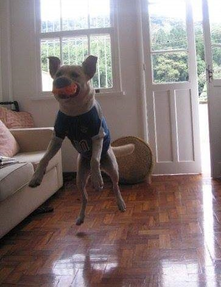
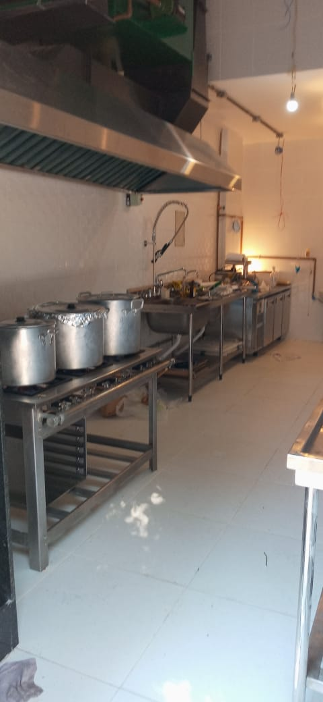
Com o tempo, nossos amigos começaram a pedir comida pra seus cães também, e fomos nos especializando e procurando parcerias com veterinários para chegar nas fórmulas atuais, todas balanceadas e suplementadas com vitaminas e minerais para suprir todas as necessidades do seu cão de acordo com o NRC (2006) Nutrient Requirements of Dogs and Cats.
O que falam sobre nós
Adélia
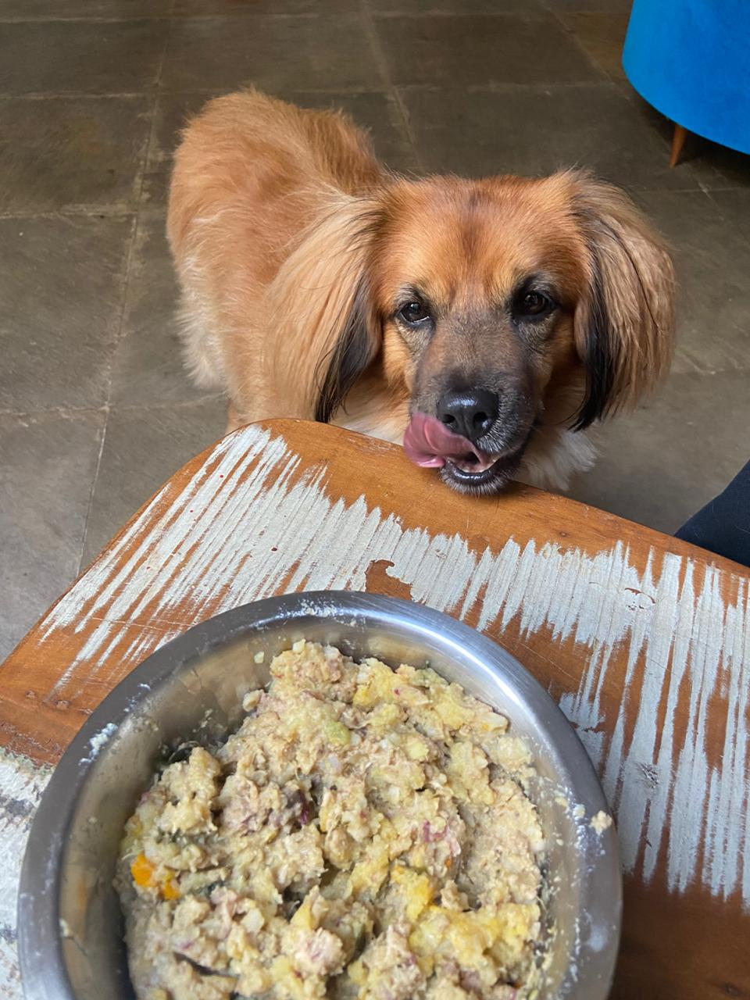
"Hm adoro essa comida"
Junior
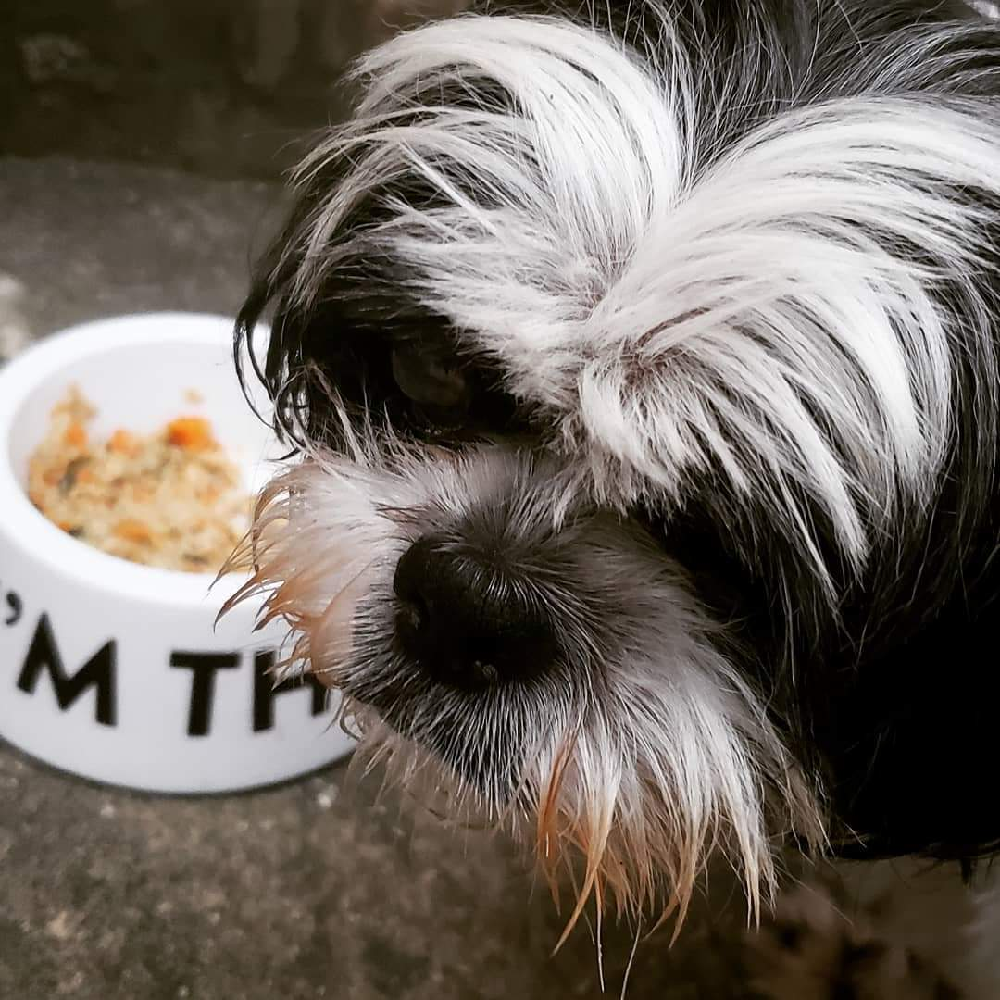
"Depois que começei a comer a comida do Ziggy Comida Natura, nunca mais quis ração de novo"
Fulano
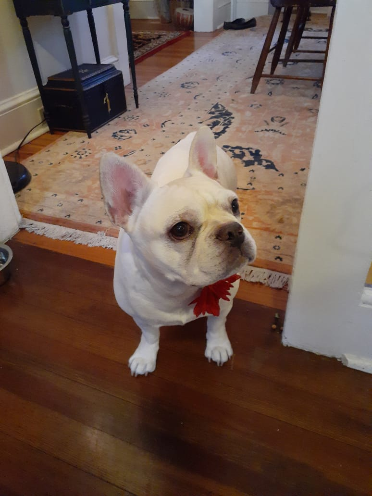
"Eu só como comida natural, meu pêlo melhorou muito desde então"
 Saudável
Saudável

 Personalizada
Personalizada